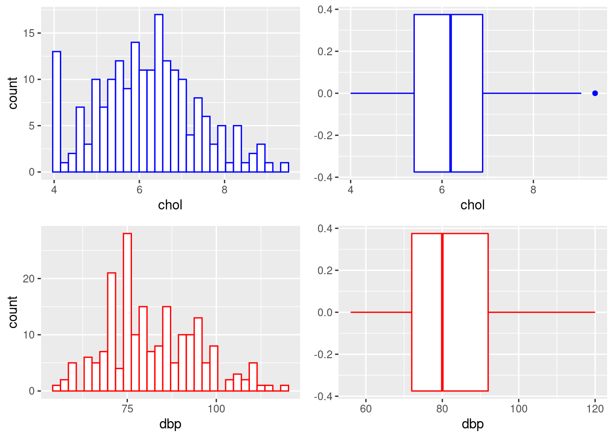
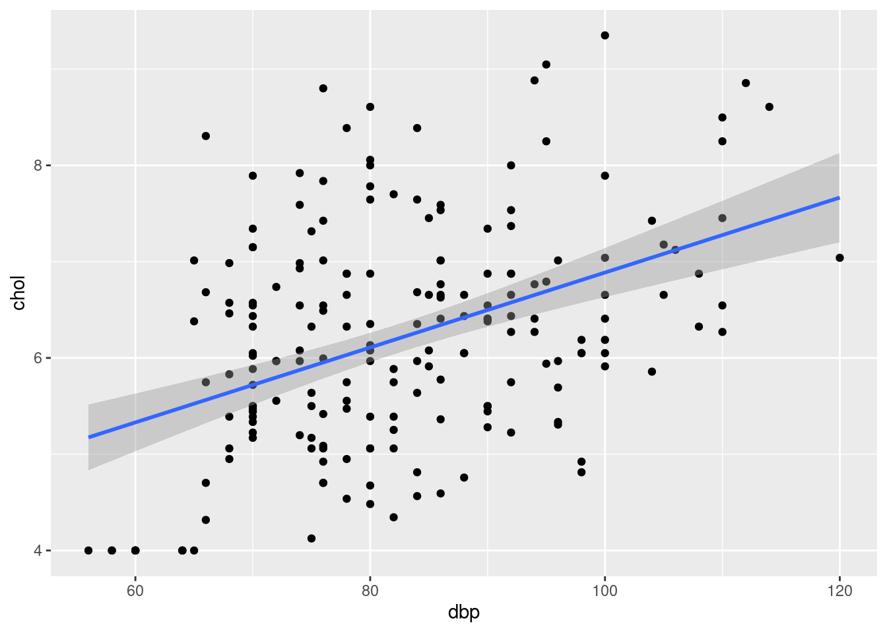
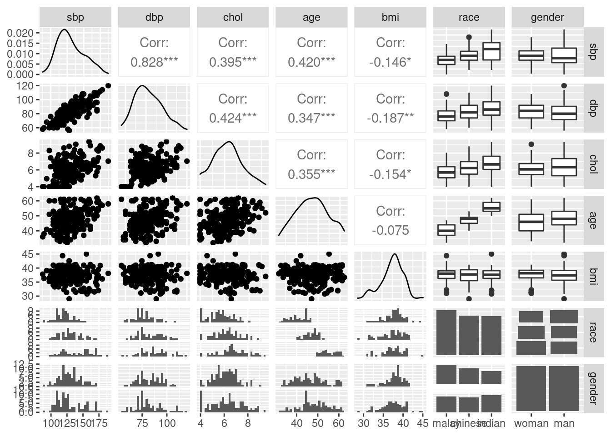
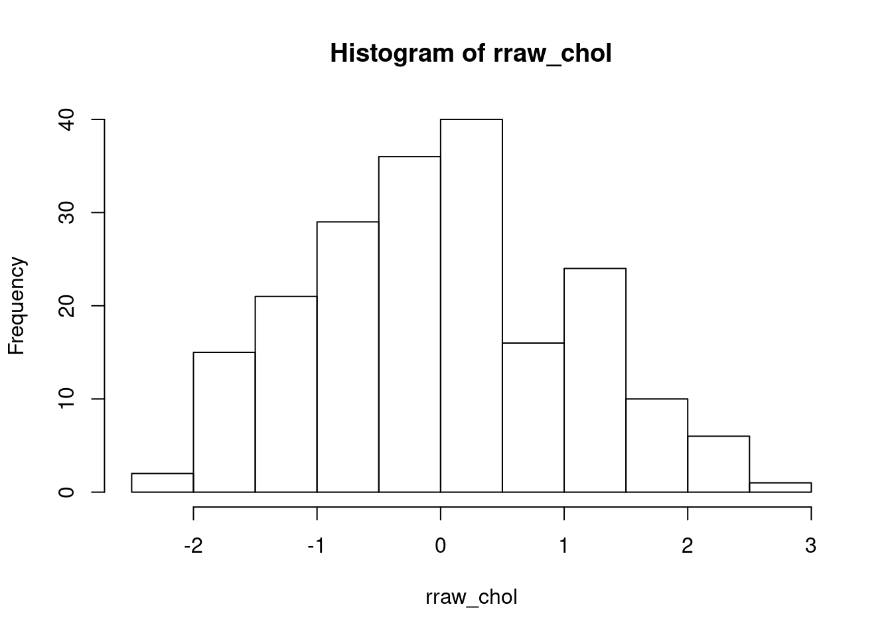
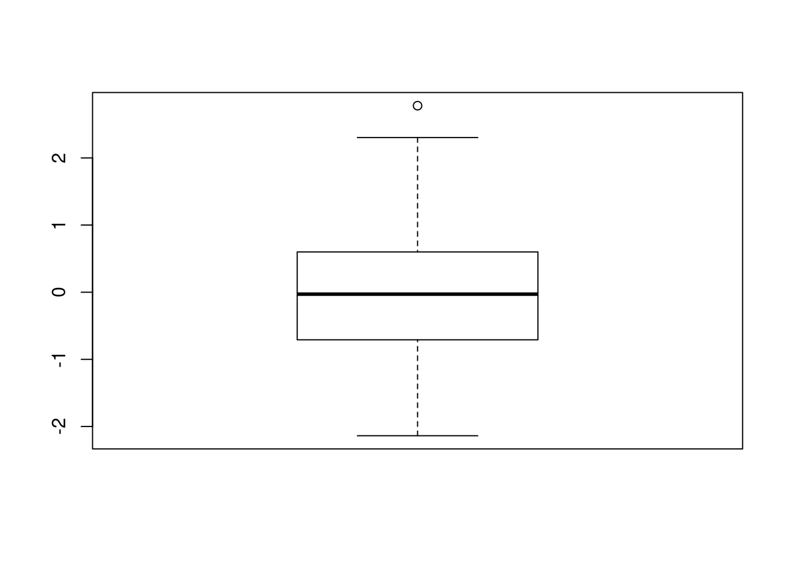
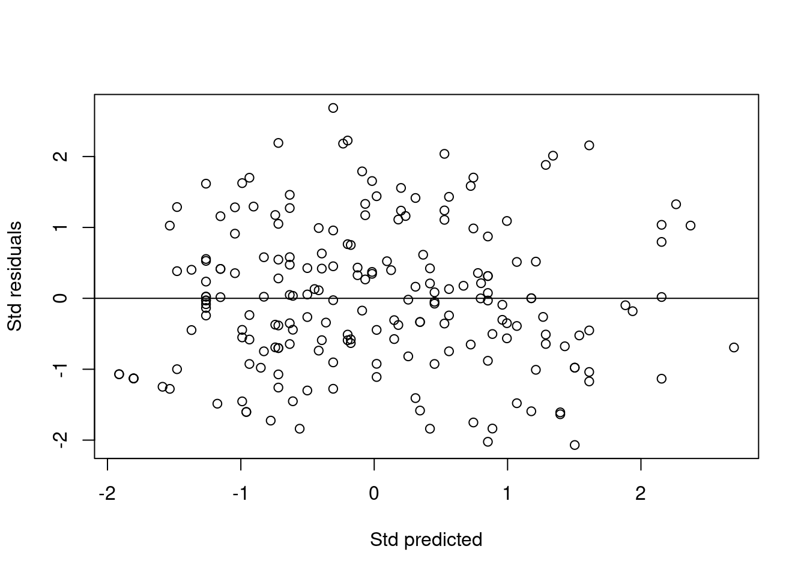
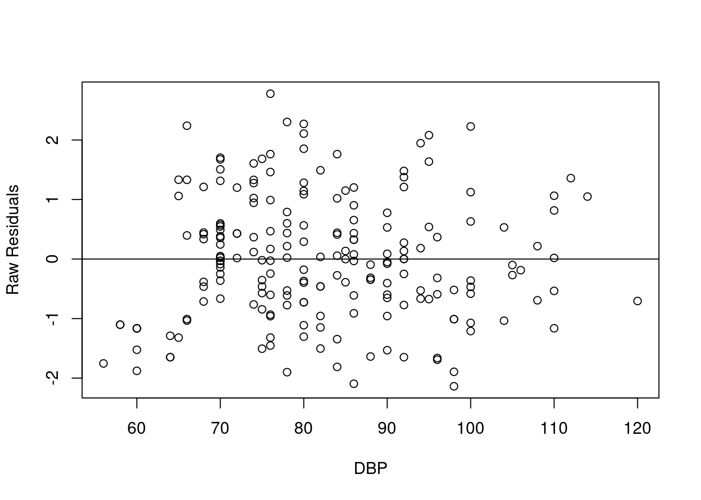

Chapter 1 Linear Regression
1.1 Introduction
A statistical method to model relationship between:
- outcome: numerical variable.
- predictors/independent variables: numerical, categorical variables.
A type of Generalized Linear Models (GLMs), which also includes other outcome types, e.g. categorical and count.
Basically, the linear relationship is structured as follows,
\[numerical\ outcome = numerical\ predictors + categorical\ predictors\]
1.2 Preliminaries
1.2.1 Library
# official CRAN
library(foreign)
library(tidyverse)## ── Attaching packages ─────────────────────────────────────── tidyverse 1.3.1 ──## ✓ ggplot2 3.3.5 ✓ purrr 0.3.4
## ✓ tibble 3.1.5 ✓ dplyr 1.0.7
## ✓ tidyr 1.1.4 ✓ stringr 1.4.0
## ✓ readr 2.0.0 ✓ forcats 0.5.1## ── Conflicts ────────────────────────────────────────── tidyverse_conflicts() ──
## x dplyr::filter() masks stats::filter()
## x dplyr::lag() masks stats::lag()library(gtsummary)
library(ggplot2)
library(ggpubr)
library(GGally)## Registered S3 method overwritten by 'GGally':
## method from
## +.gg ggplot2library(psych)##
## Attaching package: 'psych'## The following objects are masked from 'package:ggplot2':
##
## %+%, alphalibrary(rsq)
library(broom)
library(car)## Loading required package: carData##
## Attaching package: 'car'## The following object is masked from 'package:psych':
##
## logit## The following object is masked from 'package:dplyr':
##
## recode## The following object is masked from 'package:purrr':
##
## some# custom function
# desc_cat()
source("https://raw.githubusercontent.com/wnarifin/medicalstats-in-R/master/functions/desc_cat_fun.R")1.2.2 Data
coronary = read.dta("coronary.dta")
str(coronary)## 'data.frame': 200 obs. of 9 variables:
## $ id : num 1 14 56 61 62 64 69 108 112 134 ...
## $ cad : Factor w/ 2 levels "no cad","cad": 1 1 1 1 1 1 2 1 1 1 ...
## $ sbp : num 106 130 136 138 115 124 110 112 138 104 ...
## $ dbp : num 68 78 84 100 85 72 80 70 85 70 ...
## $ chol : num 6.57 6.33 5.97 7.04 6.66 ...
## $ age : num 60 34 36 45 53 43 44 50 43 48 ...
## $ bmi : num 38.9 37.8 40.5 37.6 40.3 ...
## $ race : Factor w/ 3 levels "malay","chinese",..: 3 1 1 1 3 1 1 2 2 2 ...
## $ gender: Factor w/ 2 levels "woman","man": 1 1 1 1 2 2 2 1 1 2 ...
## - attr(*, "datalabel")= chr "Written by R. "
## - attr(*, "time.stamp")= chr ""
## - attr(*, "formats")= chr "%9.0g" "%9.0g" "%9.0g" "%9.0g" ...
## - attr(*, "types")= int 100 108 100 100 100 100 100 108 108
## - attr(*, "val.labels")= chr "" "cad" "" "" ...
## - attr(*, "var.labels")= chr "id" "cad" "sbp" "dbp" ...
## - attr(*, "version")= int 7
## - attr(*, "label.table")=List of 3
## ..$ cad : Named int 1 2
## .. ..- attr(*, "names")= chr "no cad" "cad"
## ..$ race : Named int 1 2 3
## .. ..- attr(*, "names")= chr "malay" "chinese" "indian"
## ..$ gender: Named int 1 2
## .. ..- attr(*, "names")= chr "woman" "man"Descriptive statistics
tbl_summary(coronary) # median IQR| Characteristic | N = 2001 |
|---|---|
| id | 2,244 (902, 3,347) |
| cad | |
| no cad | 163 (82%) |
| cad | 37 (18%) |
| sbp | 126 (115, 144) |
| dbp | 80 (72, 92) |
| chol | 6.19 (5.39, 6.89) |
| age | 47 (42, 53) |
| bmi | 37.80 (36.10, 39.20) |
| race | |
| malay | 73 (36%) |
| chinese | 64 (32%) |
| indian | 63 (32%) |
| gender | |
| woman | 100 (50%) |
| man | 100 (50%) |
|
1
Median (IQR); n (%)
|
|
coronary %>% select(-id) %>%
tbl_summary(statistic = all_continuous() ~ "{mean} ({sd})",
digits = all_continuous() ~ 1)| Characteristic | N = 2001 |
|---|---|
| cad | |
| no cad | 163 (82%) |
| cad | 37 (18%) |
| sbp | 130.2 (19.8) |
| dbp | 82.3 (12.9) |
| chol | 6.2 (1.2) |
| age | 47.3 (7.3) |
| bmi | 37.4 (2.7) |
| race | |
| malay | 73 (36%) |
| chinese | 64 (32%) |
| indian | 63 (32%) |
| gender | |
| woman | 100 (50%) |
| man | 100 (50%) |
|
1
n (%); Mean (SD)
|
|
Customization: http://www.danieldsjoberg.com/gtsummary/index.html
1.3 Simple linear regression (SLR)
1.3.1 About SLR
Model linear (straight line) relationship between:
- outcome: numerical variable.
- a predictor: numerical variable (only).
Note: What if the predictor is a categorical variable? Usually handled that with one-way ANOVA.
- Formula, \[numerical\ outcome = intercept + coefficient \times numerical\ predictor\] in short, \[\hat y = \beta_0 + \beta_1x_1\] where \(\hat y\) is the predicted value of the outcome y.
1.3.2 Data exploration
Descriptive statistics
coronary %>% select(chol, dbp) %>% describe()## vars n mean sd median trimmed mad min max range skew kurtosis
## chol 1 200 6.20 1.18 6.19 6.18 1.18 4 9.35 5.35 0.18 -0.31
## dbp 2 200 82.31 12.90 80.00 81.68 14.83 56 120.00 64.00 0.42 -0.33
## se
## chol 0.08
## dbp 0.91Plots
hist_chol = ggplot(coronary, aes(chol)) + geom_histogram(color = "blue", fill = "white")
hist_dbp = ggplot(coronary, aes(dbp)) + geom_histogram(color = "red", fill = "white")
bplot_chol = ggplot(coronary, aes(chol)) + geom_boxplot(color = "blue", )
bplot_dbp = ggplot(coronary, aes(dbp)) + geom_boxplot(color = "red")
ggarrange(hist_chol, bplot_chol, hist_dbp, bplot_dbp)## `stat_bin()` using `bins = 30`. Pick better value with `binwidth`.
## `stat_bin()` using `bins = 30`. Pick better value with `binwidth`.
1.3.3 Fit Univariable SLR
Fit model,
# chol ~ dbp
slr_chol = glm(chol ~ dbp, data = coronary)
summary(slr_chol)##
## Call:
## glm(formula = chol ~ dbp, data = coronary)
##
## Deviance Residuals:
## Min 1Q Median 3Q Max
## -1.9967 -0.8304 -0.1292 0.7734 2.8470
##
## Coefficients:
## Estimate Std. Error t value Pr(>|t|)
## (Intercept) 2.995134 0.492092 6.087 5.88e-09 ***
## dbp 0.038919 0.005907 6.589 3.92e-10 ***
## ---
## Signif. codes: 0 '***' 0.001 '**' 0.01 '*' 0.05 '.' 0.1 ' ' 1
##
## (Dispersion parameter for gaussian family taken to be 1.154763)
##
## Null deviance: 278.77 on 199 degrees of freedom
## Residual deviance: 228.64 on 198 degrees of freedom
## AIC: 600.34
##
## Number of Fisher Scoring iterations: 2tidy(slr_chol, conf.int = TRUE) # broom package## # A tibble: 2 × 7
## term estimate std.error statistic p.value conf.low conf.high
## <chr> <dbl> <dbl> <dbl> <dbl> <dbl> <dbl>
## 1 (Intercept) 3.00 0.492 6.09 5.88e- 9 2.03 3.96
## 2 dbp 0.0389 0.00591 6.59 3.92e-10 0.0273 0.0505Important results,
- Coefficient, \(\beta\).
- 95% CI.
- P-value.
Obtain \(R^2\), % of variance explained,
rsq(slr_chol, adj = T)## [1] 0.1756834Adjusted R^2 - penalized for number of predictor p.
Scatter plot,
plot_slr = ggplot(coronary, aes(x = dbp, y = chol)) + geom_point() + geom_smooth(method = lm)
plot_slr## `geom_smooth()` using formula 'y ~ x'
# plot(chol ~ dbp, data = coronary)
# abline(slr_chol) # or using built-in graphicsthis allows assessment of normality, linearity and equal variance assumptions. We expect eliptical/oval shape (normality), equal scatter of dots on both sides of the prediction line (equal variance). Both these indicate linear relationship between chol and dbp.
1.3.4 Interpretation
- 1mmHg increase in DBP causes 0.04mmol/L increase in cholestrol.
- DBP explains 17.6% variance in cholestrol.
1.3.5 Model equation
\[chol = 3.0 + 0.04\times dbp\]
1.4 Multiple linear regression (MLR)
1.4.1 About MLR
Model linear relationship between:
- outcome: numerical variable.
- predictors: numerical, categorical variables.
Note: MLR is a term that refers to linear regression with two or more numerical variables. Whenever we have both numerical and categorical variables, the proper term for the regression model is General Linear Model. However, we will use the term MLR in this workshop.
- Formula, \[\begin{aligned} numerical\ outcome = &\ intercept + coefficients \times numerical\ predictors \\ & + coefficients \times categorical\ predictors \end{aligned}\] in a shorter form, \[\hat y = \beta_0 + \beta_1x_1 + \beta_2x_2 + ... + \beta_kx_k\] where we have k predictors.
Whenever the predictor is a categorical variable with more than two levels, we use dummy variable(s). This can be easily specified in R using factor() if the variable is not yet properly specified as such. There is no problem with binary categorical variable.
For a categorical variable with more than two levels, the number of dummy variables (i.e. once turned into several binary variables) equals number of levels minus one. For example, whenever we have four levels, we will obtain three dummy (binary) variables.
1.4.2 Data exploration
Descriptive statistics
coronary %>% select(-id, -cad, -race, -gender) %>% describe() # numerical## vars n mean sd median trimmed mad min max range skew
## sbp 1 200 130.18 19.81 126.00 128.93 17.79 88.00 187.00 99.00 0.53
## dbp 2 200 82.31 12.90 80.00 81.68 14.83 56.00 120.00 64.00 0.42
## chol 3 200 6.20 1.18 6.19 6.18 1.18 4.00 9.35 5.35 0.18
## age 4 200 47.33 7.34 47.00 47.27 8.15 32.00 62.00 30.00 0.05
## bmi 5 200 37.45 2.68 37.80 37.65 2.37 28.99 45.03 16.03 -0.55
## kurtosis se
## sbp -0.37 1.40
## dbp -0.33 0.91
## chol -0.31 0.08
## age -0.78 0.52
## bmi 0.42 0.19coronary %>% select(race, gender) %>% desc_cat() # categorical## $race
## Variable Label n Percent
## 1 race malay 73 36.5
## 2 - chinese 64 32.0
## 3 - indian 63 31.5
##
## $gender
## Variable Label n Percent
## 1 gender woman 100 50
## 2 - man 100 50# or just use
# coronary %>% select(race, gender) %>% tbl_summary()Plots
coronary %>% select(-id, -cad) %>% ggpairs()## `stat_bin()` using `bins = 30`. Pick better value with `binwidth`.
## `stat_bin()` using `bins = 30`. Pick better value with `binwidth`.
## `stat_bin()` using `bins = 30`. Pick better value with `binwidth`.
## `stat_bin()` using `bins = 30`. Pick better value with `binwidth`.
## `stat_bin()` using `bins = 30`. Pick better value with `binwidth`.
## `stat_bin()` using `bins = 30`. Pick better value with `binwidth`.
## `stat_bin()` using `bins = 30`. Pick better value with `binwidth`.
## `stat_bin()` using `bins = 30`. Pick better value with `binwidth`.
## `stat_bin()` using `bins = 30`. Pick better value with `binwidth`.
## `stat_bin()` using `bins = 30`. Pick better value with `binwidth`.
# coronary %>% select(-id, -cad) %>% plot() # or using built-in graphics1.4.3 Variable selection
Fit Univariable SLR
Perform SLR for chol, sbp, dbp and bmi on your own as shown above. Now, we are concerned with which variables are worthwhile to include in the multivariable models.
In the context of exploratory research, we want to choose only variables with P-values < 0.25 to be included in MLR. Obtaining the P-values for each variable is easy by LR test,
slr_chol0 = glm(chol ~ 1, data = coronary)
summary(slr_chol0)##
## Call:
## glm(formula = chol ~ 1, data = coronary)
##
## Deviance Residuals:
## Min 1Q Median 3Q Max
## -2.19854 -0.80854 -0.01104 0.69021 3.15146
##
## Coefficients:
## Estimate Std. Error t value Pr(>|t|)
## (Intercept) 6.19854 0.08369 74.06 <2e-16 ***
## ---
## Signif. codes: 0 '***' 0.001 '**' 0.01 '*' 0.05 '.' 0.1 ' ' 1
##
## (Dispersion parameter for gaussian family taken to be 1.400874)
##
## Null deviance: 278.77 on 199 degrees of freedom
## Residual deviance: 278.77 on 199 degrees of freedom
## AIC: 637.99
##
## Number of Fisher Scoring iterations: 2add1(slr_chol0, scope = ~ sbp + dbp + age + bmi + race + gender, test = "LRT")## Single term additions
##
## Model:
## chol ~ 1
## Df Deviance AIC scaled dev. Pr(>Chi)
## <none> 278.77 637.99
## sbp 1 235.36 606.14 33.855 5.938e-09 ***
## dbp 1 228.64 600.34 39.648 3.042e-10 ***
## age 1 243.68 613.08 26.911 2.130e-07 ***
## bmi 1 272.17 635.20 4.792 0.02859 *
## race 2 241.68 613.43 28.561 6.280e-07 ***
## gender 1 277.45 639.04 0.952 0.32933
## ---
## Signif. codes: 0 '***' 0.001 '**' 0.01 '*' 0.05 '.' 0.1 ' ' 1All variables are significant with P < .25 except gender. However, in the context of confirmatory research, what we want to include are not merely based on P-values alone. It is important to consider expert judgement as well.
Fit Multivariable MLR
Modeling considerations:
- select either sbp / dbp! redundant based on plot before, highly correlated
- gender not sig., may exclude
- for exercise reason, exclude age
Now, perform MLR with all selected variables i.e. P < .25 and above considerations,
mlr_chol = glm(chol ~ dbp + bmi + race, data = coronary)
summary(mlr_chol)##
## Call:
## glm(formula = chol ~ dbp + bmi + race, data = coronary)
##
## Deviance Residuals:
## Min 1Q Median 3Q Max
## -2.18698 -0.73076 -0.01935 0.63476 2.91524
##
## Coefficients:
## Estimate Std. Error t value Pr(>|t|)
## (Intercept) 4.870859 1.245373 3.911 0.000127 ***
## dbp 0.029500 0.006203 4.756 3.83e-06 ***
## bmi -0.038530 0.028099 -1.371 0.171871
## racechinese 0.356642 0.181757 1.962 0.051164 .
## raceindian 0.724716 0.190625 3.802 0.000192 ***
## ---
## Signif. codes: 0 '***' 0.001 '**' 0.01 '*' 0.05 '.' 0.1 ' ' 1
##
## (Dispersion parameter for gaussian family taken to be 1.083909)
##
## Null deviance: 278.77 on 199 degrees of freedom
## Residual deviance: 211.36 on 195 degrees of freedom
## AIC: 590.63
##
## Number of Fisher Scoring iterations: 2rsq(mlr_chol, adj = T)## [1] 0.2262622Focus on,
- Coefficients, \(\beta\)s.
- 95% CI.
- P-values.
For model fit,
- \(R^2\) – % of variance explained by the model.
Stepwise
As you can see, not all variables included in the model are significant. How to select? We proceed with stepwise automatic selection. It ismportant to know stepwise/automatic selection is meant for exploratory analysis. For confirmatory analysis, expert opinion in variable selection is preferable.
# both
mlr_chol_stepboth = step(mlr_chol, direction = "both")## Start: AIC=590.63
## chol ~ dbp + bmi + race
##
## Df Deviance AIC
## - bmi 1 213.40 590.55
## <none> 211.36 590.63
## - race 2 227.04 600.94
## - dbp 1 235.88 610.58
##
## Step: AIC=590.55
## chol ~ dbp + race
##
## Df Deviance AIC
## <none> 213.40 590.55
## + bmi 1 211.36 590.63
## - race 2 228.64 600.34
## - dbp 1 241.68 613.43summary(mlr_chol_stepboth)##
## Call:
## glm(formula = chol ~ dbp + race, data = coronary)
##
## Deviance Residuals:
## Min 1Q Median 3Q Max
## -2.1378 -0.7068 -0.0289 0.5997 2.7778
##
## Coefficients:
## Estimate Std. Error t value Pr(>|t|)
## (Intercept) 3.298028 0.486213 6.783 1.36e-10 ***
## dbp 0.031108 0.006104 5.096 8.14e-07 ***
## racechinese 0.359964 0.182149 1.976 0.049534 *
## raceindian 0.713690 0.190883 3.739 0.000243 ***
## ---
## Signif. codes: 0 '***' 0.001 '**' 0.01 '*' 0.05 '.' 0.1 ' ' 1
##
## (Dispersion parameter for gaussian family taken to be 1.088777)
##
## Null deviance: 278.77 on 199 degrees of freedom
## Residual deviance: 213.40 on 196 degrees of freedom
## AIC: 590.55
##
## Number of Fisher Scoring iterations: 2# forward
mlr_chol_stepforward = step(slr_chol0, scope = ~ dbp + bmi + race,
direction = "forward")## Start: AIC=637.99
## chol ~ 1
##
## Df Deviance AIC
## + dbp 1 228.64 600.34
## + race 2 241.68 613.43
## + bmi 1 272.17 635.20
## <none> 278.77 637.99
##
## Step: AIC=600.34
## chol ~ dbp
##
## Df Deviance AIC
## + race 2 213.40 590.55
## <none> 228.64 600.34
## + bmi 1 227.04 600.94
##
## Step: AIC=590.55
## chol ~ dbp + race
##
## Df Deviance AIC
## <none> 213.40 590.55
## + bmi 1 211.36 590.63summary(mlr_chol_stepforward) # same with both##
## Call:
## glm(formula = chol ~ dbp + race, data = coronary)
##
## Deviance Residuals:
## Min 1Q Median 3Q Max
## -2.1378 -0.7068 -0.0289 0.5997 2.7778
##
## Coefficients:
## Estimate Std. Error t value Pr(>|t|)
## (Intercept) 3.298028 0.486213 6.783 1.36e-10 ***
## dbp 0.031108 0.006104 5.096 8.14e-07 ***
## racechinese 0.359964 0.182149 1.976 0.049534 *
## raceindian 0.713690 0.190883 3.739 0.000243 ***
## ---
## Signif. codes: 0 '***' 0.001 '**' 0.01 '*' 0.05 '.' 0.1 ' ' 1
##
## (Dispersion parameter for gaussian family taken to be 1.088777)
##
## Null deviance: 278.77 on 199 degrees of freedom
## Residual deviance: 213.40 on 196 degrees of freedom
## AIC: 590.55
##
## Number of Fisher Scoring iterations: 2# backward
mlr_chol_stepback = step(mlr_chol, direction = "backward")## Start: AIC=590.63
## chol ~ dbp + bmi + race
##
## Df Deviance AIC
## - bmi 1 213.40 590.55
## <none> 211.36 590.63
## - race 2 227.04 600.94
## - dbp 1 235.88 610.58
##
## Step: AIC=590.55
## chol ~ dbp + race
##
## Df Deviance AIC
## <none> 213.40 590.55
## - race 2 228.64 600.34
## - dbp 1 241.68 613.43summary(mlr_chol_stepback) # same with both##
## Call:
## glm(formula = chol ~ dbp + race, data = coronary)
##
## Deviance Residuals:
## Min 1Q Median 3Q Max
## -2.1378 -0.7068 -0.0289 0.5997 2.7778
##
## Coefficients:
## Estimate Std. Error t value Pr(>|t|)
## (Intercept) 3.298028 0.486213 6.783 1.36e-10 ***
## dbp 0.031108 0.006104 5.096 8.14e-07 ***
## racechinese 0.359964 0.182149 1.976 0.049534 *
## raceindian 0.713690 0.190883 3.739 0.000243 ***
## ---
## Signif. codes: 0 '***' 0.001 '**' 0.01 '*' 0.05 '.' 0.1 ' ' 1
##
## (Dispersion parameter for gaussian family taken to be 1.088777)
##
## Null deviance: 278.77 on 199 degrees of freedom
## Residual deviance: 213.40 on 196 degrees of freedom
## AIC: 590.55
##
## Number of Fisher Scoring iterations: 2Our chosen model:
chol ~ dbp + race
mlr_chol_sel = glm(chol ~ dbp + race, data = coronary)
summary(mlr_chol_sel)##
## Call:
## glm(formula = chol ~ dbp + race, data = coronary)
##
## Deviance Residuals:
## Min 1Q Median 3Q Max
## -2.1378 -0.7068 -0.0289 0.5997 2.7778
##
## Coefficients:
## Estimate Std. Error t value Pr(>|t|)
## (Intercept) 3.298028 0.486213 6.783 1.36e-10 ***
## dbp 0.031108 0.006104 5.096 8.14e-07 ***
## racechinese 0.359964 0.182149 1.976 0.049534 *
## raceindian 0.713690 0.190883 3.739 0.000243 ***
## ---
## Signif. codes: 0 '***' 0.001 '**' 0.01 '*' 0.05 '.' 0.1 ' ' 1
##
## (Dispersion parameter for gaussian family taken to be 1.088777)
##
## Null deviance: 278.77 on 199 degrees of freedom
## Residual deviance: 213.40 on 196 degrees of freedom
## AIC: 590.55
##
## Number of Fisher Scoring iterations: 2tidy(mlr_chol_sel, conf.int = TRUE)## # A tibble: 4 × 7
## term estimate std.error statistic p.value conf.low conf.high
## <chr> <dbl> <dbl> <dbl> <dbl> <dbl> <dbl>
## 1 (Intercept) 3.30 0.486 6.78 1.36e-10 2.35 4.25
## 2 dbp 0.0311 0.00610 5.10 8.14e- 7 0.0191 0.0431
## 3 racechinese 0.360 0.182 1.98 4.95e- 2 0.00296 0.717
## 4 raceindian 0.714 0.191 3.74 2.43e- 4 0.340 1.09tbl_regression(mlr_chol_sel)| Characteristic | Beta | 95% CI1 | p-value |
|---|---|---|---|
| dbp | 0.03 | 0.02, 0.04 | <0.001 |
| race | |||
| malay | — | — | |
| chinese | 0.36 | 0.00, 0.72 | 0.050 |
| indian | 0.71 | 0.34, 1.1 | <0.001 |
|
1
CI = Confidence Interval
|
|||
rsq(mlr_chol_sel)## [1] 0.2345037Multicollinearity, MC
Multicollinearity is the problem of repetitive/redundant variables – high correlations between predictors. MC is checked by Variance Inflation Factor (VIF). VIF > 10 indicates MC problem.
vif(mlr_chol_sel) # all < 10## GVIF Df GVIF^(1/(2*Df))
## dbp 1.132753 1 1.064309
## race 1.132753 2 1.031653Interaction, *
Interaction is the predictor variable combination that requires interpretation of regression coefficients separately based on the levels of the predictor (e.g. separate analysis for each race group, Malay vs Chinese vs Indian). This makes interpreting our analysis complicated. So, most of the time, we pray not to have interaction in our regression model.
summary(glm(chol ~ dbp * race, data = coronary)) # dbp * race not sig.##
## Call:
## glm(formula = chol ~ dbp * race, data = coronary)
##
## Deviance Residuals:
## Min 1Q Median 3Q Max
## -2.10485 -0.77524 -0.02423 0.58059 2.74380
##
## Coefficients:
## Estimate Std. Error t value Pr(>|t|)
## (Intercept) 2.11114 0.92803 2.275 0.024008 *
## dbp 0.04650 0.01193 3.897 0.000134 ***
## racechinese 1.95576 1.28477 1.522 0.129572
## raceindian 2.41530 1.25766 1.920 0.056266 .
## dbp:racechinese -0.02033 0.01596 -1.273 0.204376
## dbp:raceindian -0.02126 0.01529 -1.391 0.165905
## ---
## Signif. codes: 0 '***' 0.001 '**' 0.01 '*' 0.05 '.' 0.1 ' ' 1
##
## (Dispersion parameter for gaussian family taken to be 1.087348)
##
## Null deviance: 278.77 on 199 degrees of freedom
## Residual deviance: 210.95 on 194 degrees of freedom
## AIC: 592.23
##
## Number of Fisher Scoring iterations: 2There is no interaction here because the included interaction term was insignificant. In R, it is easy to fit interaction by *, e.g. dbp * race will automatically include all vars involved i.e. equal to glm(chol ~ dbp + race + dbp:race, data = coronary). Use : to just include interaction.
1.4.4 Model fit assessment: Residuals
Histogram
Raw residuals: Normality assumption.
rraw_chol = resid(mlr_chol_sel) # unstandardized
hist(rraw_chol)
boxplot(rraw_chol) # normally distributed
Scatter plots
Standardized residuals vs Standardized predicted values: Overall – normality, linearity and equal variance assumptions.
rstd_chol = rstandard(mlr_chol_sel) # standardized residuals
pstd_chol = scale(predict(mlr_chol_sel)) # standardized predicted values
plot(rstd_chol ~ pstd_chol, xlab = "Std predicted", ylab = "Std residuals")
abline(0, 0) # normal, linear, equal variance
The dots should form elliptical/oval shape (normality) and scattered roughly equal above and below the zero line (equal variance). Both these indicate linearity.
Raw residuals vs Numerical predictor by each predictors: Linearity assumption.
plot(rraw_chol ~ coronary$dbp, xlab = "DBP", ylab = "Raw Residuals")
abline(0, 0)
1.4.5 Interpretation
Now we have decided on our final model, rename the model,
mlr_chol_final = mlr_chol_seland interpret the model,
tib_mlr = tidy(mlr_chol_final, conf.int = TRUE)
rsq(mlr_chol_final, adj = T)## [1] 0.2227869- 1mmHg increase in DBP causes 0.03mmol/L increase in cholestrol, controlling for the effect of race.
- Being Chinese causes 0.36mmol/L increase in cholestrol in comparison to Malay, controlling for the effect of DBP.
- Being Indian causes 0.71mmol/L increase in cholestrol in comparison to Malay, controlling for the effect of DBP.
- DBP and race explains 22.3% variance in cholestrol.
Use kable to come up with nice table,
knitr::kable(tib_mlr, format = "simple")| term | estimate | std.error | statistic | p.value | conf.low | conf.high |
|---|---|---|---|---|---|---|
| (Intercept) | 3.2980283 | 0.4862132 | 6.783091 | 0.0000000 | 2.3450680 | 4.2509885 |
| dbp | 0.0311081 | 0.0061044 | 5.095998 | 0.0000008 | 0.0191437 | 0.0430726 |
| racechinese | 0.3599636 | 0.1821488 | 1.976207 | 0.0495342 | 0.0029586 | 0.7169687 |
| raceindian | 0.7136902 | 0.1908827 | 3.738893 | 0.0002425 | 0.3395669 | 1.0878136 |
tbl_regression(mlr_chol_final)| Characteristic | Beta | 95% CI1 | p-value |
|---|---|---|---|
| dbp | 0.03 | 0.02, 0.04 | <0.001 |
| race | |||
| malay | — | — | |
| chinese | 0.36 | 0.00, 0.72 | 0.050 |
| indian | 0.71 | 0.34, 1.1 | <0.001 |
|
1
CI = Confidence Interval
|
|||
Export it to a csv file for use later,
write.csv(tib_mlr, "mlr_final.csv")1.4.6 Model equation
Cholestrol level in mmol/L can be predicted by its predictors as given by, \[chol = 3.30 + 0.03\times dbp + 0.36\times race\ (chinese) + 0.71\times race\ (indian)\]
1.4.7 Prediction
It is easy to predict in R using our fitted model above. First we view the predicted values for our sample,
coronary$pred_chol = predict(mlr_chol_final)
# coronary = coronary %>% mutate(pred_chol = predict(mlr_chol_final))
head(coronary)## id cad sbp dbp chol age bmi race gender pred_chol
## 1 1 no cad 106 68 6.5725 60 38.9 indian woman 6.127070
## 2 14 no cad 130 78 6.3250 34 37.8 malay woman 5.724461
## 3 56 no cad 136 84 5.9675 36 40.5 malay woman 5.911109
## 4 61 no cad 138 100 7.0400 45 37.6 malay woman 6.408839
## 5 62 no cad 115 85 6.6550 53 40.3 indian man 6.655908
## 6 64 no cad 124 72 5.9675 43 37.6 malay man 5.537812Now let us try predicting for any value for dbp and race for a subject,
# dbp = 90, race = indian
predict(mlr_chol_final, list(dbp = 90, race = "indian"))## 1
## 6.811448Now for many subjects,
new_data = data.frame(dbp = c(90, 90, 90), race = c("malay", "chinese", "indian"))
new_data## dbp race
## 1 90 malay
## 2 90 chinese
## 3 90 indianpredict(mlr_chol_final, new_data)## 1 2 3
## 6.097758 6.457722 6.811448new_data$pred_chol = predict(mlr_chol_final, new_data)
new_data## dbp race pred_chol
## 1 90 malay 6.097758
## 2 90 chinese 6.457722
## 3 90 indian 6.8114481.5 Exercises
- replace dbp with sbp
- replace race with age
- obtain coefficient for 5mmHg increase in DBP